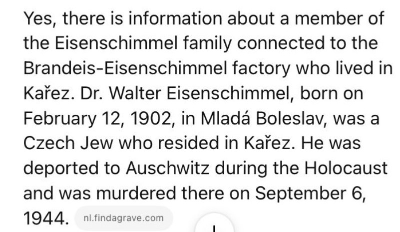

Valtr Eisenschimmel; also Walter Eisenschimmel
12 February 1902
Chemist; specialist assistant at the German Technical University in Prague
Wife: Helena (born Ilona Boschán); son: Tomáš, born 1934
Scientific achievement
The Mladá Boleslav historical account identifies Valtr as the younger son of Ludwig Eisenschimmel and Antonie Schubertová. After completing secondary school, he pursued university study abroad, earned the title of doctor and obtained a post as a specialist assistant at the German Technical University in Prague.
Those facts demonstrate exceptional academic attainment: advanced international study, a doctorate and a specialist university appointment in chemistry. The sources presently available do not identify a dissertation, publication, patent or discovery, so the archive cannot responsibly quantify his “genius” beyond the distinction shown by those documented achievements. Finding his university personnel file, dissertation and bibliography is now a defined research priority.
This also establishes a real family connection to Borek’s industrial history. Franz Eisenschimmel was the son of Ludwig’s brother Emil, making Franz and Valtr first cousins. Franz and Ludwig were partners in Franz Eisenschimmel & Co., the Roudnice agricultural-machinery company that entered a 1918 agreement with Brandeis to transfer production to Borek.
469 days in Terezín
Valtr, Helena and Tomáš were deported from Prague to Terezín.
The family remained in Terezín for approximately fifteen months. The Mladá Boleslav account says Valtr was classified as a specialist, which helped him survive there during this period.
They were deported from Terezín to Auschwitz on transport Er. None of the three returned.
The transport left less than seven months before the liberation of Terezín in May 1945. The victim database records Valtr as murdered but does not give a precise date of death.
What remains unknown: the available biographical source says Valtr’s specialist status prolonged his survival in Terezín, but it does not describe his assigned work there. Until a camp record or testimony is found, the archive should not state that he worked as a chemist in a particular Terezín laboratory or institution.
How this person was found
{kind=link}

The archive first encountered Walter Eisenschimmel through this ChatGPT answer. Its assertion that he lived in Kařez could not be verified, and its claimed death date of 6 September 1944 is incompatible with the documented transport from Terezín to Auschwitz on 16 October 1944.
Checking the inaccurate answer nevertheless identified the real Dr Valtr Eisenschimmel and led to the Mladá Boleslav family history. That source established that Valtr’s father Ludwig was a partner in Franz Eisenschimmel & Co. and that engineer Franz Eisenschimmel was Valtr’s first cousin. Following Franz’s life then revealed the family’s American branch: Franz and his wife Rosalie emigrated in 1914 and became United States citizens in 1926. Whether they had children remains unknown.
The screenshot is therefore not biographical evidence. It documents the unexpected route by which a false local claim opened a genuine family and industrial connection. See the full discovery trail.
Why he belongs in this archive
Valtr is not currently documented as an operator of the Borek factory. His importance lies in placing a human life within the Eisenschimmel family behind the combined Brandeis–Eisenschimmel enterprise. His biography connects science, industry, Jewish family history and the destruction of that family during the Holocaust.
The route to this biography is also part of the archive’s method: an inaccurate AI answer suggested a Kařez residence that could not be verified, but checking it led to documentary evidence of Valtr’s actual identity and relationship to Ludwig and Franz. See the discovery trail.
Sources and evidence
- Terezín Initiative: Dr Valtr Eisenschimmel — birth, address, transport dates and fate.
- Mladá Boleslav Tourist Information Centre: Eisenschimmel Villa, part 2 — education, profession, immediate family, Terezín account and relationship to Ludwig.
- Mladá Boleslav Tourist Information Centre: Eisenschimmel Villa, part 1 — Jewish family history and genealogy.
- Roudnice factory record and Industrial Topography: Borek works — the company and industrial connection.